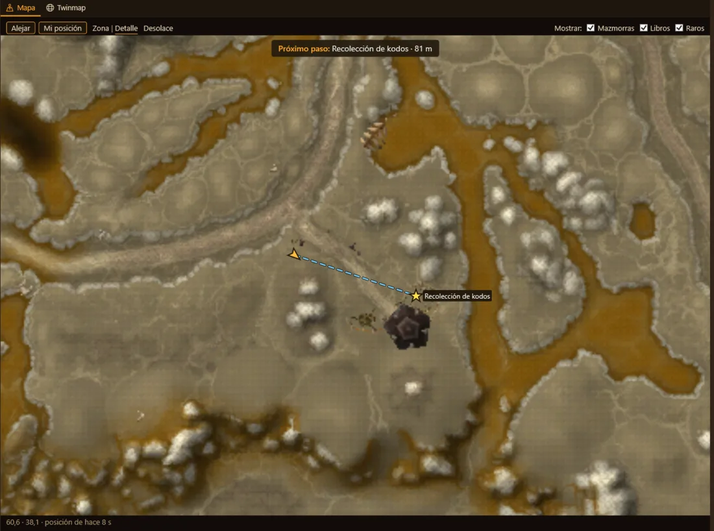

Mapa
Tu posición en el minimapa de la zona entera, con el rastro de por dónde pasaste. Arriba, el próximo paso: qué misión toca y a cuántos metros está.
Con addons opcionales dibuja el camino por las rutas, con vuelos, barcos y portales, y marca entradas de mazmorras, libros y raros.